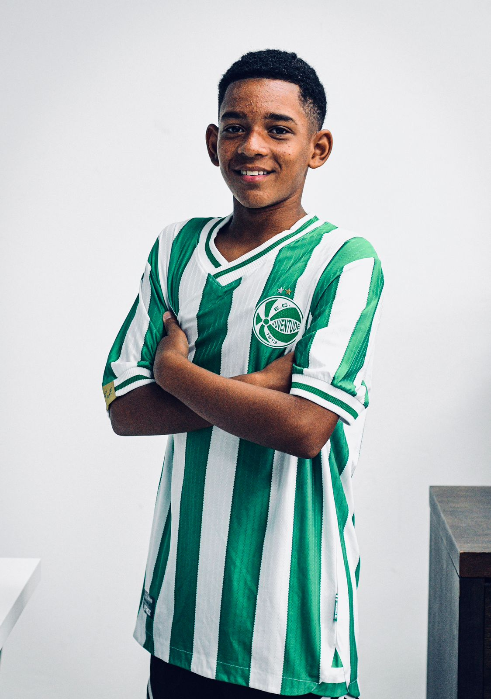
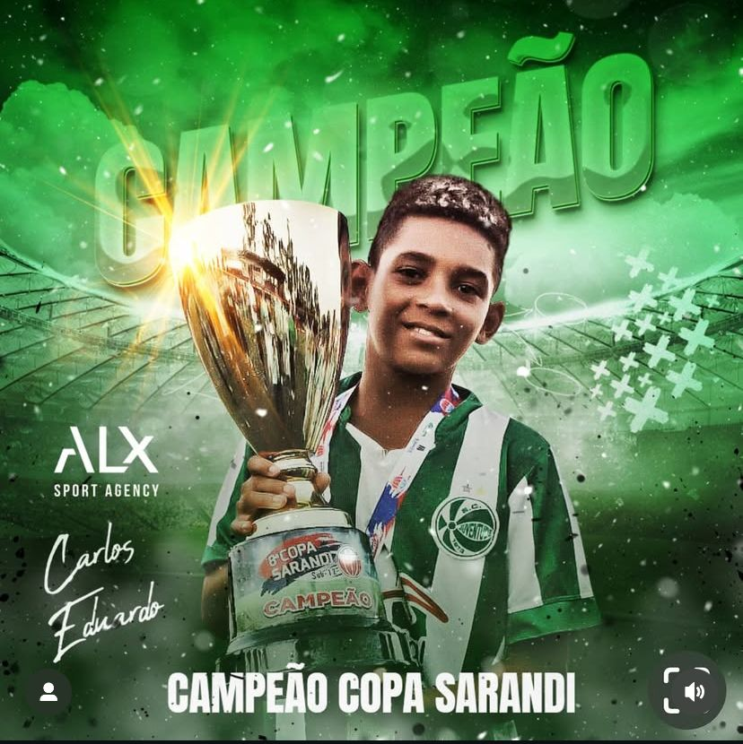

FICHA TÉCNICA 2026

Clube AtualE.C. Juventude
NaturalidadePorto Alegre - RS
Altura / Peso1.62m / 42kg
Posição / PéLateral e Meia / Destro
SKILLS 2026 🎥
Temporada 2026 • EC Juventude • Lances e habilidades de Thalles Silvino.
Se preferir, assista ao vídeo no Vimeo ↗.
DESTAQUE INDIVIDUAL
MELHOR DA POSIÇÃO & SELEÇÃO DA COPA @Sarandi (2024)
DESTAQUE DA POSIÇÃO COPA @Sãoludgero (2025)

COLEÇÃO DE CONQUISTAS
Histórico em torneios de alto nível ➝
2025
2024
2023
2022
TRAJETÓRIA PROFISSIONAL 🚀
2023 - ATUAL
E.C. Juventude ↗
Consolidado na base do Jaconero com títulos oficiais e destaque técnico.
MOMENTOS EM CAMPO 📸
Clique para ampliar a análise técnica
TEMPORADA 2026 • EC JUVENTUDE
Novos registros de jogos, concentração e atividades em campo.